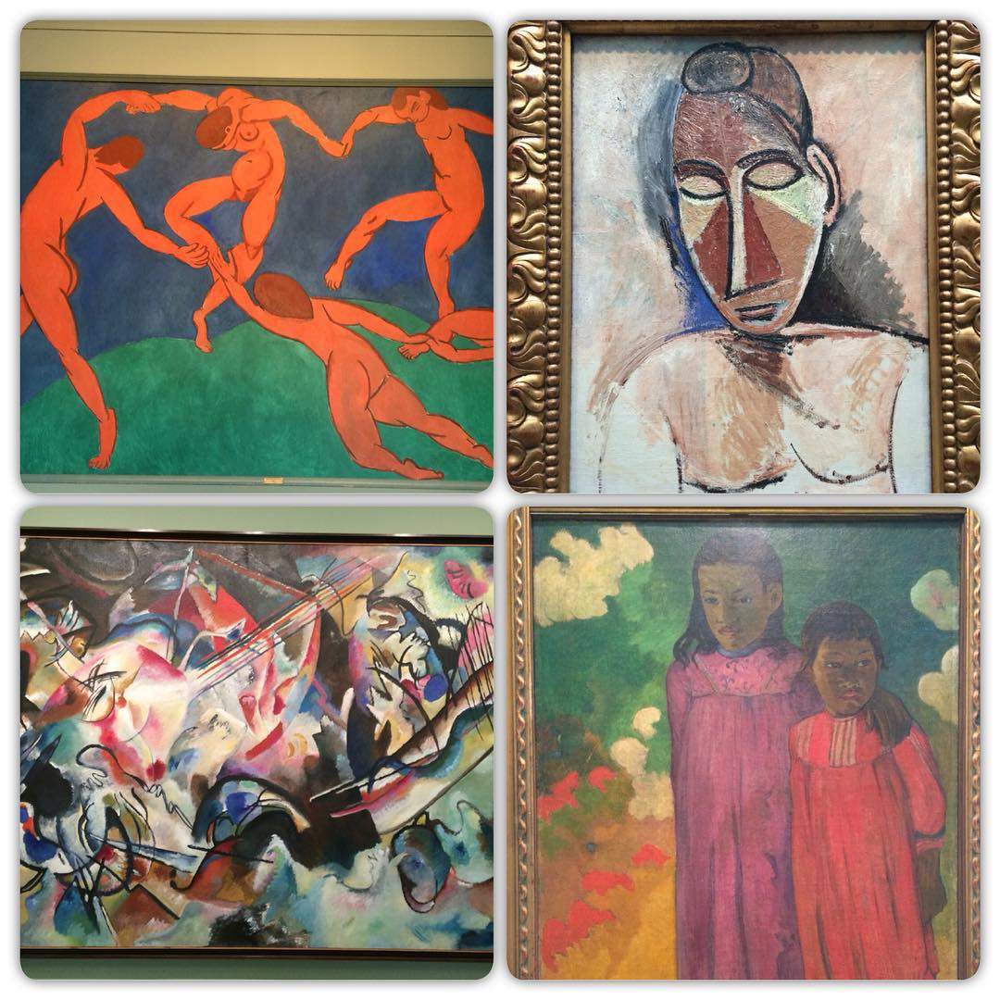
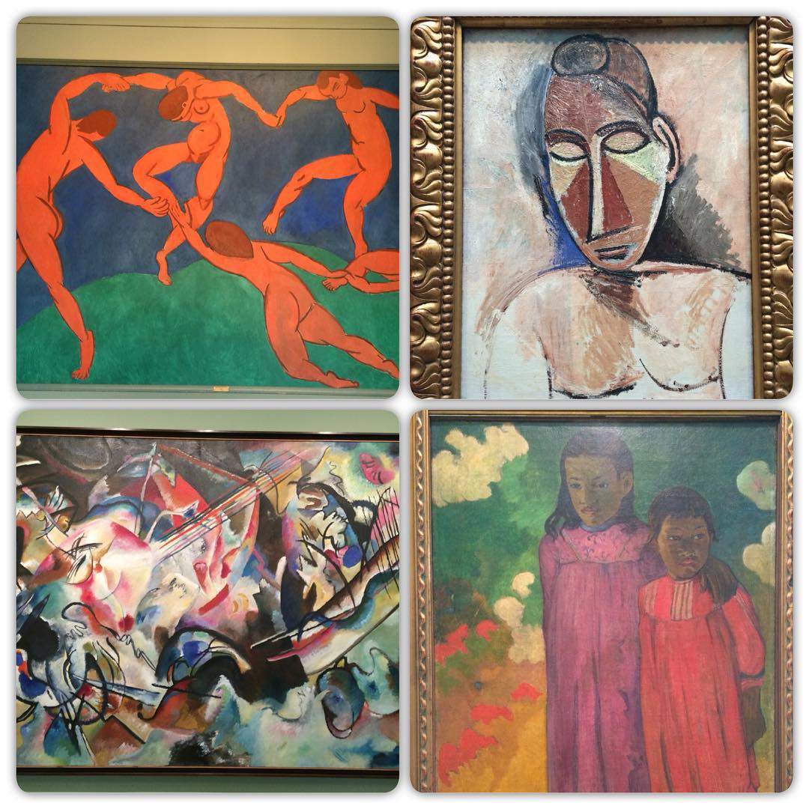
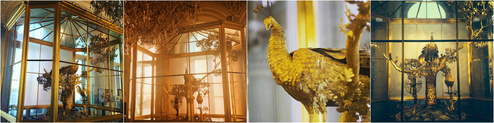
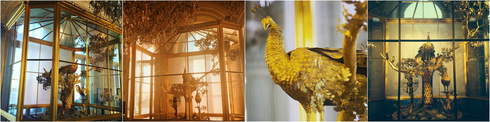

Искусство
Не смотря на большое количество снимков произведений искусства, цель этих фотографий - не документировать все увиденные шедевры, а рассказать о них в контексте посещения музея. Особенно распространены коллажи - подборки из нескольких наиболее запомнившихся экспонатов музея, собранных в одном кадре.

 



Посетители уделяют практически равнозначное внимание как скульптуре (3D-объектам), так и живописи (2D). Среди скульптур самыми популярными оказалась группа конных рыцарей из рыцарского зала, «Амур и Психея» Антонио Кановы и часы «Павлин».
 

В тройку самых популярных живописных произведений Эрмитажа входят "Мадонна Литта", которая давно считается неформальным символом музея, «Черный квадрат» Казимира Малевича и «Танец» и "Музыка" Анри Матисса. Популярность первых двух экспонатов можно объяснить тем, что они наиболее узнаваемы среди всей коллекции.


"Танец" и "Музыка" Матисса оказались наиболее интерактивными произведениями: среди всех шедевров музея, эти картины служат самым популярным фоном для позирования и селфи. Кроме того, композицию «Танца» любят повторять группы посетителей. Отвечая или дополняя изображенное, посетители пытаются взаимодействовать с предметами искусства.

Несмотря на запреты, иногда посетителям удается взаимодействовать с экспонатами напрямую. На многочисленных фотографиях можно увидеть, как посетители трогают дверные ручки и вазы, касаются поверхностей из мозаики или мрамора и таким образом транслируют свой тактильный опыт. Наиболее интерактивны скульптуры, поскольку предлагают больше всего вариантов для
взаимодействий - их можно взять за руку, обнять, а в некоторых случаях и поцеловать.
Коснуться музейных артефактов - это, по мнению Instagram-пользователей, еще один способ связать себя с пространством музея.